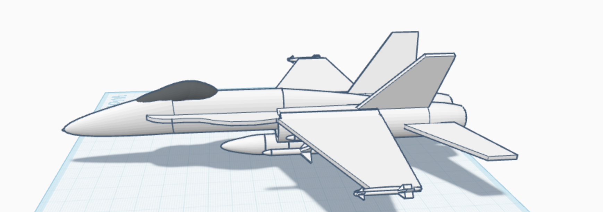
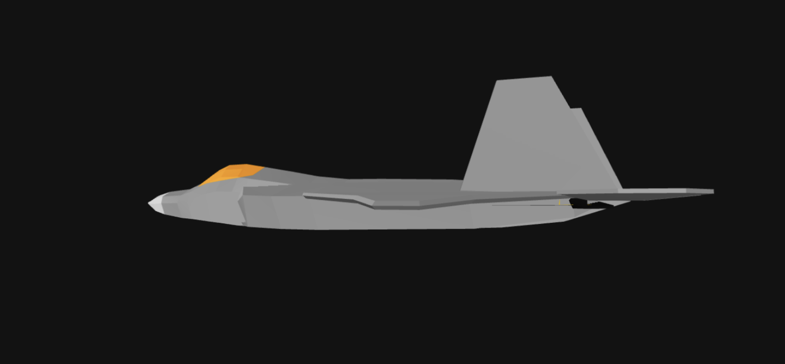

✈️ My analysis of FA-18
 Link to prototype - https://www.tinkercad.com/things/apgNbukKme2-copy-of-copy-of-fighter-jet-fa-18a/edit
While checking out the fighter jet model, I noticed a bunch of things that didn’t seem quite right. First off, there’s no landing gear or doors, so I’m not really sure how it would land or keep anything inside safe. The engines are super close together, which could mess up the airflow and maybe even affect how well it flies. Also, there’s no wing fold system, which is important for jets that land on aircraft carriers where space is tight. The bottom of the jet is really flat, and that could cause a lot of drag and reduce how smoothly it flies through the air. The tailhook is placed way too far forward, which makes it kind of useless if the jet needs to stop quickly on a carrier. Another big issue is that the fuel and weapons are just out in the open, so they could easily get hit by debris or other stuff during takeoff. The jet also has a pretty wide body, which might increase drag and make it easier to spot on radar. Lastly, the tail fins are angled kind of weirdly, which could throw off stability unless they were designed that way for a specific reason. Overall, the design looks cool, but it would need some serious fixes to actually work in real life.
🛠️ My Enhanced Fighter Jet Prototype
This is my updated fighter jet prototype made in Blender with the help of some online templates. I feel it has some improvements from the above version. In the earlier model, the design was bulkier, the body was too rounded, and the aerodynamics didn’t make much sense. For this version, I made the shape more streamlined and flat to reduce drag and improve airflow under the fuselage, especially during high-speed flight. I also adjusted the canopy to have a sharper, more realistic angle like real stealth jets, which helps with both visibility and reducing radar reflection. The tail and fin shapes were redesigned to look more like modern jets; this one has a more blended and sharper vertical stabilizer, which would give it better stability in yaw. I also tightened up the body and made the wings thinner and more aligned, which helps with lift without adding extra drag. While I haven’t added landing gear or internal compartments yet, I’ve started thinking more about where things like engine placement and weapon bays should realistically go. Using Blender has not only helped me learn 3D design, but it's also made me think more about the physics of flight; like how airflow, drag, thrust, and lift actually work together in a jet. I'm proud of how far the model has come, and I'm excited to keep improving it.